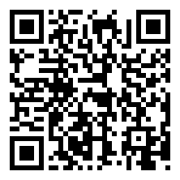
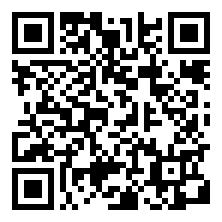
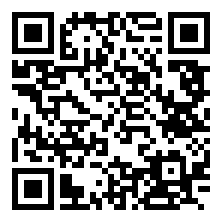
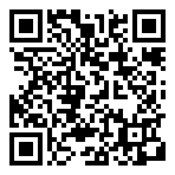
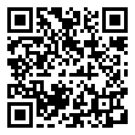
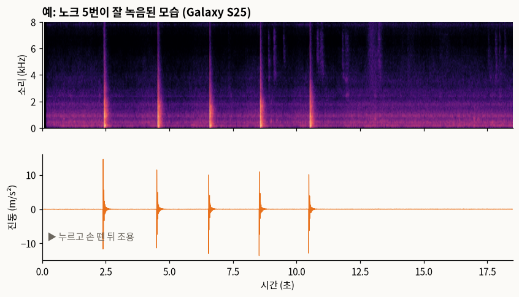

탁자 소리+진동 녹음 (약 15분)
「보는 AI」 6편 실험에 참여해 주셔서 고마워요. 폰을 탁자에 놓고 몇 가지 소리를 내면, 폰의 마이크와 흔들림 센서가 함께 기록해요. 「보는 AI」 6편 실험에 쓰여요. 녹음은 방 안 소리만 들어가니, 대화나 TV 소리가 없는 곳에서 해 주세요.
1. 준비 (한 번만)
- phyphox를 설치해요. 무료이고 광고나 가입이 없어요 (개발자: RWTH Aachen University).
- 아래 버튼 5개를 차례로 눌러요. 누를 때마다 phyphox가 열리며 실험이 하나씩 추가돼요. PC 화면으로 보고 있다면 phyphox의 ＋ → QR 코드로 실험 추가로 옆의 QR을 찍어도 돼요. phyphox 첫 화면의 "보는 AI 6편" 아래에 5개가 생기면 준비 끝이에요.
1. 노크 실험 추가

2. 컵 실험 추가

3. 손뼉 실험 추가

4. 문지르기 실험 추가

5. 조용히 실험 추가

- 처음 열 때 마이크 권한을 물으면 허용해요.
- 머그컵이나 텀블러 하나를 준비해요. 처음부터 끝까지 같은 컵을 써요.
phyphox 화면 사용법
| ▶ | 녹음 시작 |
| ■ (▶ 자리) | 녹음 멈춤 |
| 🗑 휴지통 | 방금 녹음 지우기 (잘못했을 때 다시 하기) |
| ⋮ 메뉴 | 데이터 내보내기: 녹음을 zip 파일로 저장하거나 보내기 |
화면의 그래프는 흔들림(진동)이에요. 노크하면 뾰족하게 튀어요. 손뼉은 소리만 나서 그래프가 거의 안 움직이는 게 정상이에요.
예: 이렇게 하면 돼요 (노크)
- 폰을 탁자에 두고 "보는AI 6편 · 노크"를 열어요.
- ▶를 누르고 손을 떼요.
- 속으로 "하나, 둘, 셋" 세고 톡 → "하나, 둘, 셋" → 톡… 다섯 번.
- 다섯 번째 뒤 3초쯤 기다렸다가 ■.
- ⋮ → 데이터 내보내기 → CSV (쉼표) → 저장.

위는 소리, 아래는 진동이에요. 노크마다 소리에 세로줄, 진동에 봉우리가 같은 순간에 생겨요. 처음 2초가 조용한 건 ▶를 누르고 손을 뗀 시간이에요.
2. 녹음 (실험마다 두 번)
- 폰을 탁자에 평평하게 놓아요. 컵은 폰에서 20~30 cm 떨어진 곳에 둬요.
- 실험을 열고 ▶를 누른 뒤 폰에서 손을 떼요. 녹음하는 동안 폰을 만지지 않아요.
- 3초 뒤부터 아래 동작을 한 번 하고 3초 쉬기를 5번 해요.
- 18초쯤 지나면 ■로 멈춰요.
- ⋮ → 데이터 내보내기 → CSV (쉼표) → 저장해요. 내 파일, Google Drive 등 어디든 괜찮아요. zip 파일 하나가 생겨요.
- 같은 실험을 한 번 더 해요. 그다음 실험으로 넘어가요.
3. 실험 5개
| 실험 | 할 일 |
|---|---|
| 노크 | 폰 옆 탁자를 손가락 마디로 "톡" |
| 컵 | 컵을 들었다가 같은 자리에 내려놓기 |
| 손뼉 | 폰에서 30 cm 떨어진 허공에서 손뼉. 탁자에 닿지 않게 |
| 문지르기 | 손가락으로 탁자를 1~2초 "쓱" 문지르기. 조금 힘을 줘서 |
| 조용히 | 18초 동안 아무것도 하지 않기. 말도 하지 않기 |
아이폰이라면
똑같이 하면 돼요. 아이폰은 흔들림을 재는 횟수가 조금 적어서(보통 1초에 100번 안팎) 결과가 약간 다를 수 있는데, 그것도 실험에 도움이 돼요. 보낼 때 폰 기종도 같이 알려 주세요.
4. 보내기
zip 파일 10개(실험 5개 × 2번)를 한 번에 보내 주세요. 카카오톡이나 Google Drive 공유 링크 모두 괜찮아요. 파일 이름은 바꾸지 않아도 돼요. 이름에 실험 이름과 시간이 들어 있어요.
탁자 종류(나무, 유리 등)와 컵 종류를 한 줄로 같이 적어 주시면 좋아요.